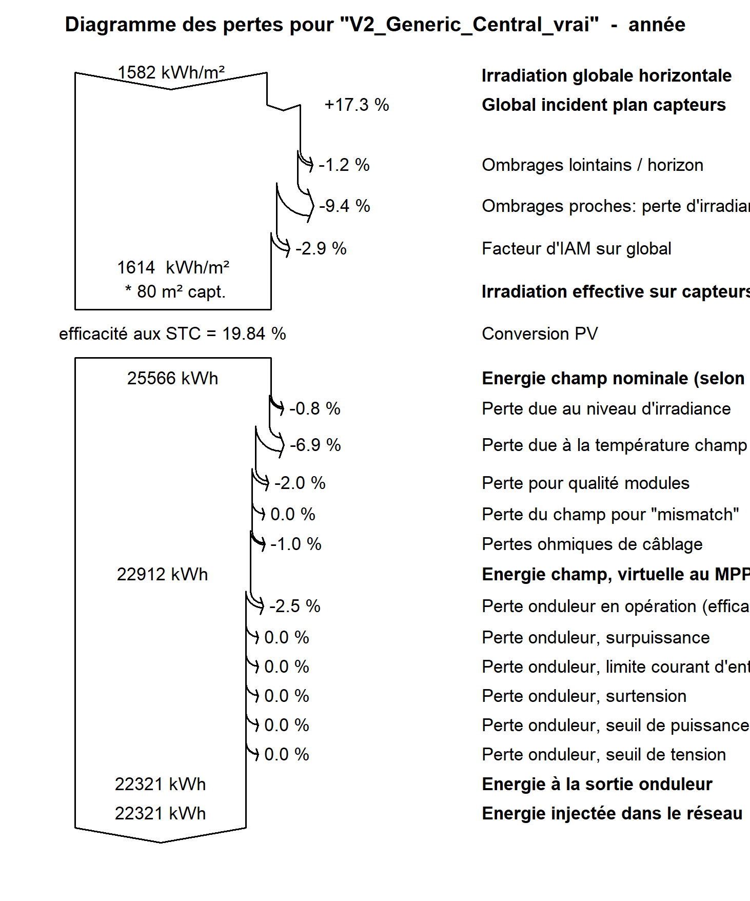

Solar PV engineering study · Agricultural roof in Carpentras
PVsyst array sizing and shading analysis for an agricultural building.
Engineering study of an agricultural rooftop in Carpentras (southern France): how much electricity can a PV array deliver, and how do near-shading and load profiles impact on-site self-consumption?

Why this study?
Available roof area alone does not determine usable solar yield
The study examined a farm building in Carpentras featuring a ~156 m² near-south-facing roof pitched at 25°. The objective was to size an optimal PV array and quantify how far-horizon terrain and nearby trees affect energy yield.
A second objective evaluated end-use alignment: a high-yielding PV array does not automatically match the site’s 4,500 kWh annual electricity demand profile.
Methodology
Comparing solar obstructions and inverter topologies
I built a 3D shading scene of the PV array and surrounding trees in PVsyst, separating irradiance losses caused by shadows from electrical mismatch losses across module strings.
- Evaluated 48-module array layouts ranging from 14.4 to 15.8 kWp across different inverter topologies.
- Modelled far-horizon profiles and 3D near-shading objects (adjacent trees).
- Separated optical irradiance shading losses from electrical string-mismatch losses.
- Matched hourly PV output against a 4,500 kWh/year farm load profile to compute self-consumption metrics.
Key outcomes
Near-shading electrical mismatch outweighs far-horizon losses
Adding far-horizon obstructions reduces annual yield from 24.9 to 24.6 MWh/yr (~1.2% loss). In a separate configuration combining a central string inverter with nearby trees, electrical string-mismatch losses reach 31.8%—more than triple the 9.4% optical irradiance loss.
Under the central-inverter scenario, out of 14,949 kWh/yr generated, 1,959 kWh are consumed directly on site—representing a 13.1% self-consumption rate and covering 43.5% of the farm’s annual electricity demand.
Deliverables
The full technical report details array sizing, inverter comparisons, loss breakdowns, and self-consumption results, and is available upon request via email.
Request the report via email